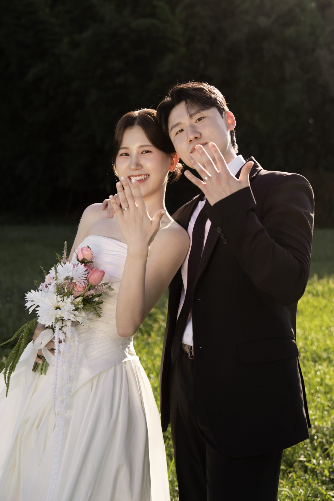

OUR FIFTH WINTER
성현 & 미현
12월 22일, 우리의 다섯 번째 겨울에WE ARE GETTING MARRIED
SCROLL TO BEGIN ↓
A letter to you
저희 두 사람의
새로운 시작을 전합니다.
❦
12월 22일, 우리의 다섯 번째 겨울에
저희 두 사람이 처음 손을 잡았던 날.
함께 걸어온 다섯 해의 시간 속에 깊은 신뢰와 사랑을 쌓아온 저희가, 이제 부부로서 새로운 시작을 맞이하려 합니다.
복잡한 예식 대신 양가 부모님을 모시고
소중하고 화목한 식사 자리를 통해 부부의 서약을 마쳤습니다.
한 분 한 분 모시고 인사드려야 마땅하나, 별도의 예식 없이 조용히 출발하게 된 점 넓은 마음으로 양해를 부탁드립니다.
직접 모시지 못하는 아쉬움은 크지만,
멀리서 전해주시는 따뜻한 축하와 격려의 마음을 잊지 않고 언제나 서로 아껴주며 행복하게 살겠습니다.
신랑 안성현 · 신부 정미현 드림
December 22
OUR FIFTH WINTER
Our moments
우리의 소중한 순간들
사진을 좌우로 넘겨 감상해 주세요
Guestbook
따뜻한 마음을 남겨주세요
저희의 시작을 축복해 주시는
소중한 마음을 오래도록 간직하겠습니다.